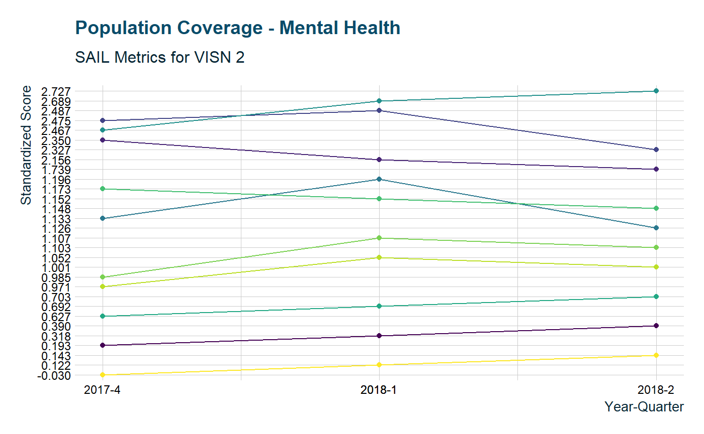
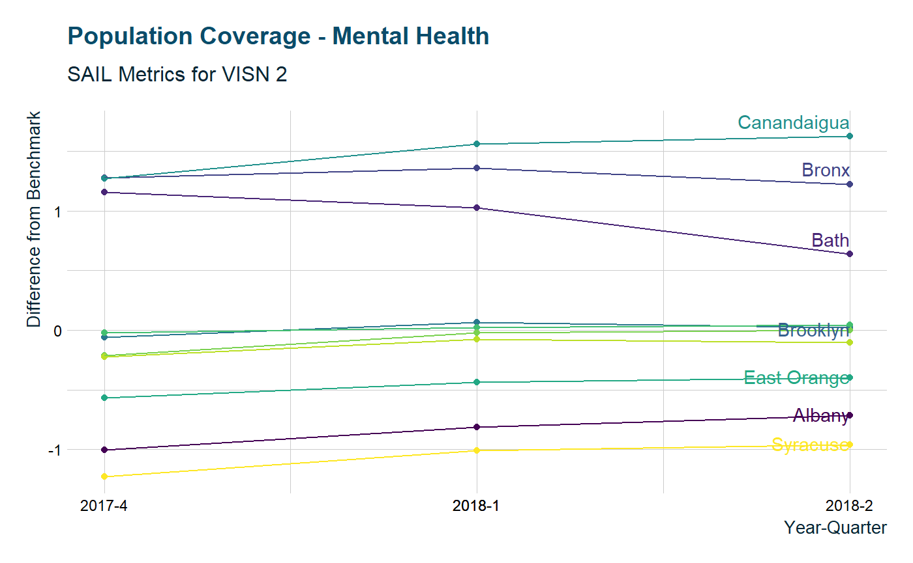
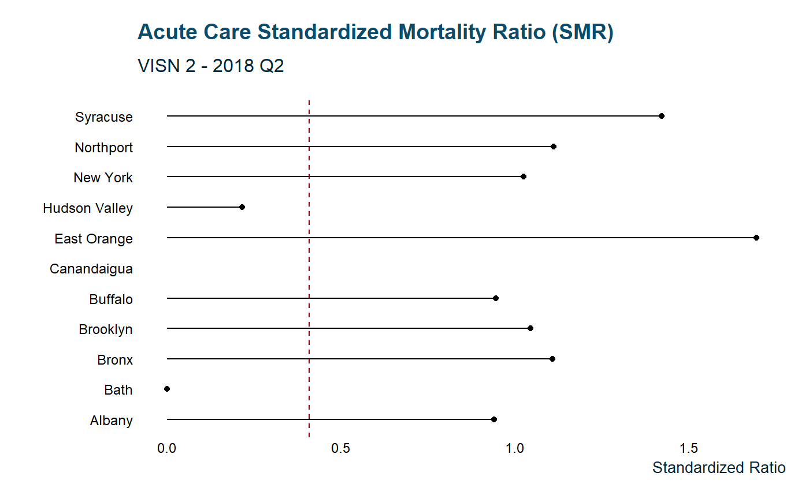

The harvest functions are a homebrewed API to fetch VA hospital performance data. harvest_get() will fetch a list of URLs and convert it to a tibble for easy subsetting
library(tidyVA)
links <- harvest_get(VISN == "VISN 2")
glimpse(links)
#> Observations: 33
#> Variables: 6
#> $ VISN <chr> "VISN 2", "VISN 2", "VISN 2", "VISN 2", "VISN 2", ...
#> $ Site <chr> "Albany", "Bath", "Bronx", "Brooklyn", "Buffalo", ...
#> $ downloadURL <chr> "https://www.va.gov/QUALITYOFCARE/SAIL_FY17_Q4/SAI...
#> $ format <chr> "XLS", "XLS", "XLS", "XLS", "XLS", "XLS", "XLS", "...
#> $ Year <chr> "2017", "2017", "2017", "2017", "2017", "2017", "2...
#> $ Quarter <chr> "4", "4", "4", "4", "4", "4", "4", "4", "4", "4", ...An object created with harvest_get can be piped to harvest_wrngl to import and tidy the datasets into one tibble.
data <- links %>% harvest_wrngl()
#> readxl works best with a newer version of the tibble package.
#> You currently have tibble v1.4.2.
#> Falling back to column name repair from tibble <= v1.4.2.
#> Message displays once per session.
data
#> # A tibble: 2,310 x 9
#> Measure `Measure Unit` Benchmark `10th-50th-90th~ Site.x Value VISN
#> <chr> <chr> <chr> <chr> <chr> <chr> <chr>
#> 1 Acute ~ <NA> <NA> <NA> Albany <NA> VISN~
#> 2 1. Acu~ O/E 0.409 0.409 - 0.828 -~ Albany 0.954 VISN~
#> 3 2. Acu~ O/E 0.717 0.717 - 0.955 -~ Albany 0.847 VISN~
#> 4 a. AMI~ % 7.003 7.003 - 7.967 -~ Albany 8.320 VISN~
#> 5 b. CHF~ % 4.870 4.870 - 5.970 -~ Albany 7.201 VISN~
#> 6 c. Pne~ % 17.195 17.195 - 18.393~ Albany 18.2~ VISN~
#> 7 d. COP~ % 3.757 3.757 - 4.725 -~ Albany 5.244 VISN~
#> 8 Avoida~ <NA> <NA> <NA> Albany <NA> VISN~
#> 9 1. In-~ O/E 0.274 0.274 - 0.918 -~ Albany 0.986 VISN~
#> 10 2. Hea~ <NA> <NA> <NA> Albany <NA> VISN~
#> # ... with 2,300 more rows, and 2 more variables: Year <chr>,
#> # Quarter <chr>This can then easily be explored within the tidyverse
unique(data$Measure)
#> [1] "Acute care mortality"
#> [2] "1. Acute care Standardized Mortality Ratio (SMR)"
#> [3] "2. Acute care 30-day Standardized Mortality Ratio (SMR30)"
#> [4] "a. AMI RSMR"
#> [5] "b. CHF RSMR"
#> [6] "c. Pneumonia RSMR"
#> [7] "d. COPD RSMR"
#> [8] "Avoidable adverse events"
#> [9] "1. In-hospital complications"
#> [10] "2. Healthcare associated infections (HAI)"
#> [11] "a. Catheter associated urinary tract infection"
#> [12] "b. Central line associated bloodstream infection"
#> [13] "c. Ventilator associated events (IVAC Plus)"
#> [14] "d. Methicillin-resistant Staphylococcus aureus (MRSA) infection"
#> [15] "3. Patient safety indicator (PSI Average Standardized Score)"
#> [16] "Length of Stay and Utilization Management"
#> [17] "1. Adjusted length of stay"
#> [18] "2. Utilization management"
#> [19] "a. Admission reviews met, adjusted"
#> [20] "b. Continued stay reviews met, adjusted"
#> [21] "Care Transition"
#> [22] "1. Ambulatory Care Sensitive Condition hospitalizations"
#> [23] "2. Hospital-wide 30-day readmission rate"
#> [24] "a. Cardiorespiratory cohort"
#> [25] "b. Cardiovascular cohort"
#> [26] "c. Medicine cohort"
#> [27] "d. Neurology cohort"
#> [28] "e. Surgical cohort"
#> [29] "3. Disease specific 30-day readmission rate"
#> [30] "a. AMI RSRR"
#> [31] "b. CHF RSRR"
#> [32] "c. Pneumonia RSRR"
#> [33] "d. COPD RSRR"
#> [34] "Patient Experience"
#> [35] "1. Overall rating of hospital (inpatient)"
#> [36] "2. Overall rating of primary care providers"
#> [37] "3. Overall rating of specialty care providers"
#> [38] "4. Care Transition (inpatient)"
#> [39] "5. PCMH Stress Discussed (Q40)"
#> [40] "Employee Satisfaction"
#> [41] "1. Best places to work"
#> [42] "a. Overall job satisfaction"
#> [43] "b. Satisfaction with organization"
#> [44] "c. Recommend my organization as a good place to work"
#> [45] "2. Registered nurse turnover rate"
#> [46] "Performance measures"
#> [47] "1. Inpatient performance measures (ORYX90_1)"
#> [48] "2. Outpatient performance measures (HED90_1)"
#> [49] "3. Outpatient performance measures (HED90_ec)"
#> [50] "Access"
#> [51] "1. PCMH / Specialty Care Access questions"
#> [52] "a. PCMH timely appointment, care and information"
#> [53] "b. Specialty Care timely appointment, care and information"
#> [54] "c. Days Waited for Urgent Appointment (PCMH)"
#> [55] "2. Wait times"
#> [56] "a. Primary care new patient wait time <=30 days from create date"
#> [57] "b. Specialty care new patient wait time <=30 days from create date"
#> [58] "c. Mental health care new patient wait time <=30 days from create date"
#> [59] "3. Call center responsiveness"
#> [60] "a. Call center speed in responding to calls in seconds"
#> [61] "b. Call center abandonment rate"
#> [62] "Mental Health"
#> [63] "1. Population coverage"
#> [64] "2. Continuity of care"
#> [65] "3. Experience of care"
#> [66] "Efficiency and Capacity"
#> [67] "1. Efficiency (1/SFA)"
#> [68] "2. Physician Capacity"
#> [69] "e. C. difficile infection"
#> [70] "4. Post acute care events"
#> [71] "e. Stroke RSMR"
#> [72] "e. Stroke RSRR"library(ggplot2)
library(tidyr)
library(zoo)
data %>% filter(Measure == "1. Population coverage") %>%
tidyr::unite(YrQ, Year, Quarter, sep = "-") %>%
mutate(date = as.yearqtr(YrQ)) %>%
ggplot(aes(date, Value, color = Site.x)) +
geom_point() +
geom_line(aes(group = Site.x)) +
scale_color_viridis_d(guide = FALSE) +
scale_x_yearqtr(format = "%Y-%q") +
labs(y = "Standardized Score", x = "Year-Quarter",
color= "Site") +
ggtitle("Population Coverage - Mental Health",
subtitle = "SAIL Metrics for VISN 2") +
theme_va()
pop <- data %>% filter(Measure == "1. Population coverage") %>%
tidyr::unite(YrQ, Year, Quarter, sep = "-") %>%
mutate(date = as.yearqtr(YrQ),
diff = as.numeric(Value) - as.numeric(Benchmark))
ggplot(pop, aes(date, diff, color = Site.x)) +
geom_point() +
geom_line(aes(group = Site.x)) +
scale_x_yearqtr(format = "%Y-%q") +
scale_color_viridis_d(guide = FALSE) +
labs(y = "Difference from Benchmark", x = "Year-Quarter") +
ggtitle("Population Coverage - Mental Health",
subtitle = "SAIL Metrics for VISN 2") +
theme_va() +
geom_text(data = subset(pop, pop$date == "2018 Q2"),
aes(label = Site.x), hjust = "inward", vjust = "outward",
position_nudge(y = .07), stat = "identity", check_overlap = TRUE)
data %>%filter(Measure =="1. Acute care Standardized Mortality Ratio (SMR)") %>%
tidyr::unite(YrQ, Year, Quarter, sep = "-") %>%
mutate(date = as.yearqtr(YrQ),
SMR = as.numeric(Value)) %>%
filter(date == "2018-2") %>%
ggplot(aes(SMR, Site.x)) +
geom_segment(aes(x = 0, y = Site.x, xend = SMR, yend = Site.x)) +
geom_point() +
geom_vline(xintercept = 0.409, lty = "dashed", color = "darkred") +
labs(x = "Standardized Ratio", y = " ") +
ggtitle("Acute Care Standardized Mortality Ratio (SMR)",
subtitle = "VISN 2 - 2018 Q2") +
theme_va(grid = FALSE)